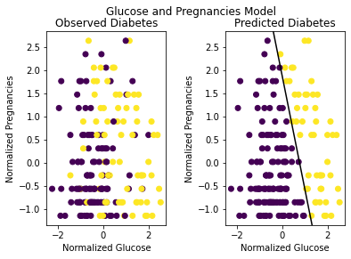

Diabetes Prediction Summary
Contents
Diabetes Prediction Summary#
Initial Models#
Logistic regression was performed for a binary classification problem to predict whether a subject is diabetic or non-diabetic. Input variables provided in the dataset included:
Number of pregnancies (int)
Glucose level (int)
Blood pressure (int)
Skin thickness (int)
Insulin (int)
BMI (float)
Diabetes pedigree function (float)
Age (int)
Outcomes were denoted by a 1 for diabetic and a 0 for non-diabetic.
Functions were created in Python to initialize the data, split the dataset into training and testing sets, normalize input values, add a bias, calculate cost, gradients, and model accuracy, iterate through gradient descent, and visualize the data. Initially, the model was trained on all provided features, resulting in the following output:
8-Dimensional Model#
Input variables:
Number of pregnancies (int)
Glucose level (int)
Blood pressure (int)
Skin thickness (int)
Insulin (int)
BMI (float)
Diabetes pedigree function (float)
Age (int)
Output:
Final weights: [-0.66405417 0.30734772 0.71401776 -0.11287652 -0.00607035 0.03314956 0.52259872 0.2591092 0.16235891]
Final cost: -0.0017505502766420476
Training Accuracy: 0.7673611111111112
Testing Accuracy: 0.78125
Since all input values were normalized, the final weights furthest from 0 reflect the features that have the largest impact on the classification. Conversely, the classes corresponding to the weights very close to 0 are less significant. Thus, skin thickness and insulin levels, with weights -0.0060735 and 0.03314956, were considered least impactful.
Another logistic regression model was trained and tested on the remaining 6 classes (i.e. excluding skin thickness and insulin levels). The resulting classification accuracies for training and testing sets were similar to the initial 8-dimensional model:
6-Dimensional Model#
Input variables:
Number of pregnancies (int)
Glucose level (int)
Blood pressure (int)
BMI (float)
Diabetes pedigree function (float)
Age (int)
Output:
Final weights: [-0.89146127 0.42844742 0.9595772 -0.22267593 0.75103708 0.31908514 0.10940684]
Final cost: -0.050473260107638356
Training Accuracy: 0.7743055555555556
Testing Accuracy: 0.7760416666666666
As indicated by the output results of this model as well as the previous model, glucose is most impactful on diabetes prediction, as its corresponding weight is furthest from 0. This observation is also corroborated by the parallel coordinate plot of the test data:

The glucose column has the most distinct separation between diabetic and non-diabetic cases.
Glucose Comparison#
Since both previous applications of logistic regression on the diabetes dataset indicated that glucose was the most significant variable, models were created to perform logistic regression on glucose and another variable that also had a greater impact. Disregarding the bias, as this is the same for all cases, the features with the most extreme weights after glucose, from most significant to least signficiant, were BMI, pregnancies, and diabetes pedigree function. Performing logistic regression on these variables and glucose yielded similar test accuracies of 76.0417%, 77.0834%, and 77.6042%, respectively. This can also be seen in the side-by-side scatterplots below comparing predicted diabetics to observed diabetics for each of the three models.
2-Dimensional Models Comparison#
Input features |
Glucose level (int) |
Glucose level (int) |
Glucose level (int) |
Final weights |
[-0.84826529 1.02577726 0.68402623] |
[-0.80287488 1.08189954 0.38894197] |
[-0.63104608 0.84221055 0.27509572] |
Final cost |
-0.058537166596216314 |
-0.065769539953255 |
-0.02408674110918849 |
Training Accuracy |
0.7586805555555556 |
0.7413194444444444 |
0.7465277777777778 |
Test Accuracy |
0.7604166666666666 |
0.7708333333333334 |
0.7760416666666666 |

Decision Boundary#
The black line in each of the “Predicted Diabetes” scatterplots shows the decision boundary. This was calculated by setting the sigmoid function \(h_{\theta}(x) = 0.5\). Thus, the boundary is determined by when \(\theta_{0} + \theta_{1}\cdot x_{1} + \theta_{2}\cdot x_{2} = 0\).
Solving for \(x_{2}\), the y-axis variable of the scatterplot, gives
This is a linear relationship between the x-axis variable, \(x_{1}\), and the y-axis variable, \(x_{2}\).
Finally, logistic regression was performed to determine the effect of removing glucose from the selected features. A model was created, trained, and tested on BMI and pregnancy values. The result is a lower classification accuracy rate, as observed from the output:
2-Dimensional Model Without Glucose#
Input variables:
Number of pregnancies (int)
BMI (float)
Output:
Final weights: [-0.62254392 0.61786381 0.4043365]
Final cost: -0.028591104587616968
Training Accuracy: 0.6996527777777778
Test Accuracy: 0.671875
Permutation Testing#
To determine the benefit of applying logistic regression, a permutation test was conducted on the 6-dimensional model:
The chosen statistic to measure the effect of using a logistic regression model is classification accuracy. The original sample used for the permutation test was the original diabetes testing dataset. The selected features in the 6-dimensional model were:
Number of pregnancies (int)
Glucose level (int)
Blood pressure (int)
BMI (float)
Diabetes pedigree function (float)
Age (int)
It is unclear whether this dataset was randomly selected. However, the data within each feature/variable is exchangeable, so permutations of the original dataset can be taken to create resamples.
From above, the test accuracy when applying the logistic regression model on the original diabetes testing dataset was 78.646%.
Methodology#
5000 resamples of the original sample were created by permuting each feature independently. This was done in Python. The trained 6-dimensional logistic regression model was applied on each of the resamples. A classification accuracy was then calculated by \(\text{accuracy} = \frac{\text{correct classifications}}{\text{total classifications}}\), and a permutation distribution was constructed with the resulting values.
The percentile for the test accuracy for the original dataset, 78.646%, was determined to be nearly 100%. As a result, the p-value was nearly 0.0.
Conclusions#
If it is assumed that the trained 6-dimensional logistic regression model is equally as effective as random chance at classifying diabetes, there is an approximately 0% chance of seeing an original sample classification accuracy as large or larger than the observed. Since approximately 0 is clearly lower than any reasonable significance value, there is sufficient evidence to conclude that the trained logistic regression model is more effective than random chance at classifying diabetes.